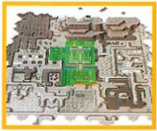
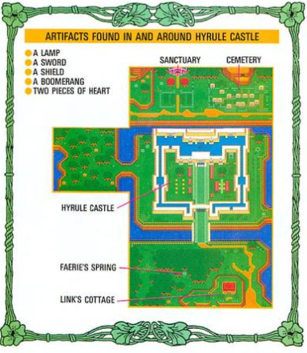

 A broad bridge spanned the river in front of Hyrule Castle and led to the main entrance. The bridge connected the royal fortress to the forest area, Link's house and regions farther south.

The Castle
Hyrule Castle once welcomed all Hyrulians. It was the home to several generations of royalty who were worshipped by their people. Inside the castle, royal red carpets where rolled out over the castle's stone floors, and rich tapestries from far off lands adorned its walls.
Many fierce battles were waged just outside the castle walls against outside attackers, but the Hyrulians prevailed-until Agahnim appeared with his sinister strategy.
Link's Cottage
Like the other homes in Hyrule, the cottage where Link and his uncle lived was simple. It was furnished with a bed and table, both hand-crafted from logs bought from the lumberjacks in the north.
The only unusual furnishing was a finely carved chest that sat in one corner of the room. The home was south of Hyrule Castle, just at the edge of a thick forest where Link and his uncle hunted for their food.